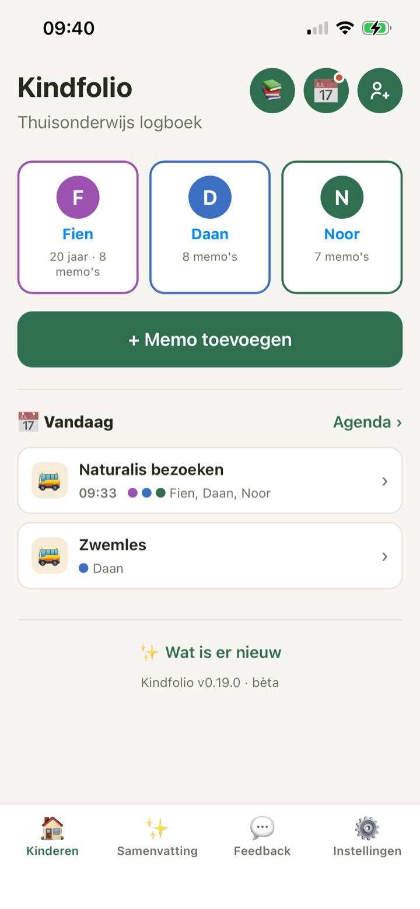
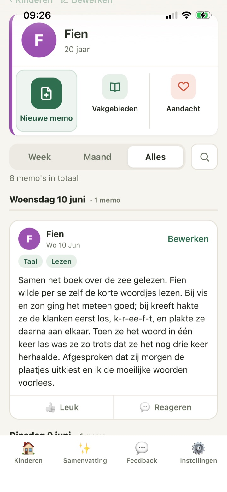
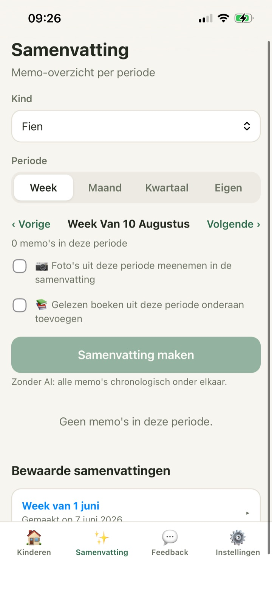
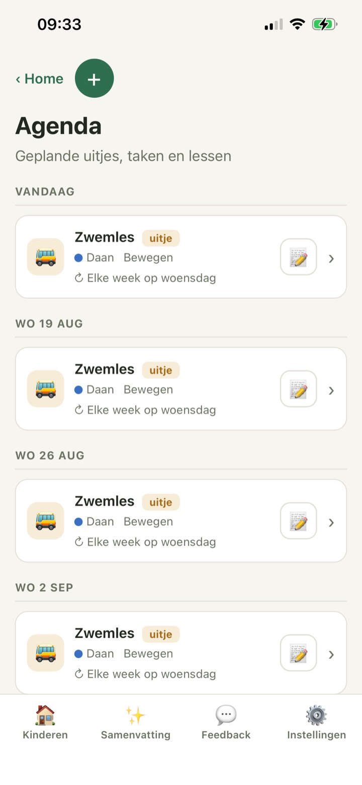

Foto’s in je camerarol, een losse notitie op je telefoon, en dat ene boek dat nog op tafel ligt.
● Gratis · nu beschikbaar
Eén memo per dag.
Het portfolio maakt zichzelf.
Leg ’s avonds in een minuut vast wat je kind vandaag deed — typ het, spreek het in, of zet er een foto bij. Kies later een week, een maand of een kwartaal, en Kindfolio maakt er een verslag van.
- In een minuut
- Werkt offline
- Gratis
- Van jou

🎙️Gewoon insprekenKindfolio maakt er tekst van
📄Portfolio klaarPer week, maand of kwartaal
Komt dit bekend voor?
Jullie doen zóveel.
Alleen staat het overal en nergens.
Aan het eind van het kwartaal moet je terugzoeken wat jullie ook alweer allemaal gedaan hebben.
En de andere ouder — of de begeleider — mist de kleine doorbraken van die dag.
Kindfolio brengt het bij elkaar, zonder van jullie huis een schooladministratie te maken.
Zo werkt het
Drie kleine stappen.
Steeds meer overzicht.
Niets vooraf invullen, geen leerdoelen afvinken. Je schrijft achteraf op wat er gebeurd is — en precies dát is waar een portfolio uit bestaat.
Schrijf een memo
Kies het kind, typ of spreek in wat jullie gedaan hebben, hang er vakgebieden aan en eventueel een foto. Voor één kind, of meteen voor meerdere. Nog niet af? Bewaar ’m als concept.
Alles hangt aan elkaar
Per kind, datum en vakgebied. Ook je agenda, de boeken die jullie lezen en de aandachtspunten krijgen hun plek — en hangen aan je memo’s vast.
Vat het samen
Kies week, maand, kwartaal of je eigen datums. Je krijgt een lopend verslag met de foto’s en de gelezen boeken erbij. Bijschaven, bewaren of printen als PDF.
Dagelijks logboek
Een minuut, en de dag staat vast.
Wat je ’s avonds nog weet, ben je over drie weken kwijt. Een memo is één alinea: wat jullie deden, hoe het ging, en waar je kind trots op was. Typen mag, inspreken ook — Kindfolio zet je stem om in tekst.
- Inspreken in plaats van typen, ook als je handen vol zitten
- Eén memo voor meerdere kinderen tegelijk
- Eigen vakgebieden en subcategorieën (Taal → Lezen)
- Foto’s automatisch verkleind, locatie eruit
- Meelezers kunnen reageren en een duim geven

Hoe ging het?🤩 Leuk🙂 Prima
🎙️
0:18 ingesprokenOmgezet naar tekst
Portfolio & samenvatting
Niet meer teruggraven. Je verhaal ligt al klaar.
Aan het eind van een week, maand of kwartaal kies je het kind en de periode. Je krijgt een lopend verslag in plaats van een lijst losse notities — met de foto’s uit die periode en de boeken die uit gingen. Bewaren, bijschaven en printen als PDF.
✨
AI is optioneel.
Zonder AI verschijnen alle memo’s gewoon chronologisch. Foto’s gaan nooit naar AI.

Samen & vooruitkijken
Iedereen betrokken. Ieder met een passende rol.
Zwemles op woensdag, museumbezoek, de wekelijkse rekentafel: zet het één keer in de agenda met een herhaling, en maak er na afloop met één tik een memo van waarin datum, kind en vakgebied al klaarstaan. Een gezinslid werkt mee; een begeleider leest en reageert.
F
GezinslidVoegt toe en bewerkt
M
MeelezerLeest en reageert
- Herhalingen: elke week op woensdag, elke maand, elke N dagen
- Aandachtspunten koppelen aan een agenda-item
- Alles synchroniseert tussen telefoons, tablets en laptops

🚌
ZwemlesIedere woensdag · Daan
→ memo
Verder in Kindfolio
En dit zit er ook in.
Het meeste hiervan is er gekomen omdat een ouder erom vroeg op het feedbackprikbord.
Periodes
Geef achteraf een naam aan een stuk tijd — het WK dat wekenlang meeliep, de winter van de ijstijd. Wat er in die weken in je logboek staat, hoort er vanzelf bij.
SLO-kerndoelen
Wil je kunnen laten zien wat er aan bod komt? Vink kerndoelen aan bij een memo, een boek of een periode. Basisonderwijs én onderbouw, per kind in te stellen. Standaard uit. Lees hoe het werkt →
Aandachtspunten
Waar je kind nog moeite mee heeft, komt samen op één lijst per kind — met “nu oefenen”, “voor later” en afvinken.
Je eigen boekenkast
Leerboeken, leesboeken, websites, video’s en apps op één plek, met status van te lezen tot uit.
Eigen vakgebieden
Vijftien vakgebieden om mee te beginnen, aan te vullen met je eigen — per gezin én per kind.
Als app op je telefoon
Zet Kindfolio op je beginscherm. Hij opent als een gewone app en werkt ook zonder bereik.
Alles exporteren
Je gegevens als JSON, of alles inclusief foto’s in één ZIP, geordend per kind en datum.
Jouw wensen tellen
Op het feedbackprikbord stem je mee over wat er als volgende bij komt — en zie je wat er met je idee gebeurt.
Van jou, niet van een platform
Een plek voor waardevolle herinneringen vraagt om duidelijke keuzes.
Een logboek over je kinderen is het meest persoonlijke wat je kunt bijhouden. Kindfolio is open source en gebouwd met privacy als uitgangspunt. Je kunt alles meenemen en, als je wilt, de hele app zelf hosten.
Bekijk de broncode op GitHub ↗Foto’s versleuteld
AES-256-GCM op schijf. GPS- en andere EXIF-data worden al in je browser verwijderd, vóór het uploaden.
Audio blijft dichtbij
Transcriptie gebeurt met whisper.cpp op onze eigen server. Geen externe dienst, en het audiobestand wordt daarna direct verwijderd.
AI is een schakelaar
Zet ’m uit en Kindfolio werkt volledig zonder. Staat ’ie aan, dan gaan alleen de notitieteksten mee — nooit je foto’s, nooit je accountgegevens.
In de EU, en mee te nemen
Je gegevens staan op een server in de Europese Unie (Duitsland). Download alles als ZIP, inclusief foto’s. Geen lock-in, geen afscheid van je archief.
Kindfolio groeit mee
Gebouwd vanuit echte thuisonderwijsdagen.
Live sinds juni 2026, en sindsdien bijna wekelijks iets erbij — bijna altijd omdat iemand erom vroeg op het feedbackprikbord.
12 aug
Aandachtspunten direct inplannenEén tik en er staat een agenda-item klaar
12 aug
Foto’s per dag in de PDFGegroepeerd onder de dag waarop ze gemaakt zijn
12 aug
Kindfolio staat open voor iedereenAanmelden kan zonder uitnodigingscode
Goed om te weten
Vragen die je misschien nog hebt.
Staat je vraag er niet tussen? Mail gerust naar info@kindfolio.nl.
Is Kindfolio gratis?+
Ja. Onbeperkt kinderen, memo’s, foto’s, agenda en samenvattingen. Alleen AI kost ons geld per keer, dus daarvoor geldt een ruime bovengrens van 50 verzoeken per maand per portfolio. Dat is een vangnet tegen uitschieters, geen quotum — in gewoon gebruik merk je er niets van. Samenvatten zónder AI blijft onbeperkt. Kom je er toch tegenaan? Mail even naar info@kindfolio.nl, dan zetten we hem omhoog.
Hoe begin ik?+
Je maakt zelf een account met je e-mailadres — er is geen uitnodiging of wachtlijst. Je bevestigt je e-mailadres, voegt je kinderen toe en schrijft je eerste memo.
Ik wil geen AI bij mijn kind. Kan dat?+
Ja. In de instellingen zet je AI-samenvattingen uit; je krijgt dan alle memo’s van de gekozen periode netjes chronologisch onder elkaar, klaar om te printen. Er gaat alleen iets naar een AI-dienst als je daar zelf voor kiest: de tekst van je memo’s bij een AI-samenvatting, en bij de AI-voorstellen voor kerndoelen als je die aanzet; en álleen als je de foto-schrijfhulp aanzet of foto’s meestuurt met een samenvatting ook die foto’s. De foto-schrijfhulp en de kerndoelen staan standaard uit. Je accountgegevens gaan er nooit heen.
Kan ik laten zien dat we aan de kerndoelen werken?+
Als je dat wilt, ja. Zet Kerndoelen bijhouden aan en je kunt bij een memo, een leermiddel, een agenda-item of een periode aanvinken welke SLO-kerndoelen erbij horen. Beide sets zitten erin: 40 voor het basisonderwijs en 45 voor de onderbouw van het voortgezet onderwijs — welke bij een kind hoort, stel je per kind in. In de Terugblik zie je dan per leergebied wat er is langsgekomen. Laat je het uit, dan zie je er nergens iets van: Kindfolio schrijft je geen manier van lesgeven voor. Het hele verhaal staat op een aparte pagina.
Waar staan mijn foto’s?+
Versleuteld op een server in de Europese Unie (Duitsland), per account gescheiden. Locatiegegevens worden al in je browser uit de foto gehaald, vóór het uploaden. En omdat Kindfolio open source is, kun je hem ook op je eigen server draaien.
Wat als ik het bijhouden niet volhoud?+
Een memo mag één zin en één foto zijn — en als typen te veel is, spreek je ’m gewoon in. Sla je een week over? Geen ramp: Kindfolio is een geheugensteun, geen verplichting. Wat je wél hebt vastgelegd, staat er nog steeds.
Kan mijn partner meedoen?+
Ja. Je nodigt iemand uit per e-mail, als gezinslid (mag alles bewerken) of als meelezer (leest mee en reageert). Alles synchroniseert, dus jullie zien altijd hetzelfde.
Werkt het op mijn iPhone of Android-telefoon?+
Ja. Kindfolio is een mobiele webapp die je als app-icoon op je beginscherm kunt zetten, en hij werkt ook zonder bereik. Inspreken werkt overal; op Android in Chrome zie je de tekst zelfs meelopen terwijl je praat.
Wat gebeurt er met mijn gegevens als Kindfolio stopt?+
Dan neem je je spullen mee. Eén knop exporteert alles — memo’s, samenvattingen en foto’s — als ZIP, geordend per kind en datum. En omdat de code open staat onder de AGPL-3.0-licentie, kan iemand anders (of jijzelf) hem blijven draaien.
Begin bij vandaag
Vandaag één memo.
Later het hele verhaal.
Je hoeft niet terug te kijken op wat je nog niet hebt vastgelegd. Eén memo over deze dag is genoeg om te beginnen.
Maak een gratis account →Gratis. Geen creditcard, geen wachtlijst.